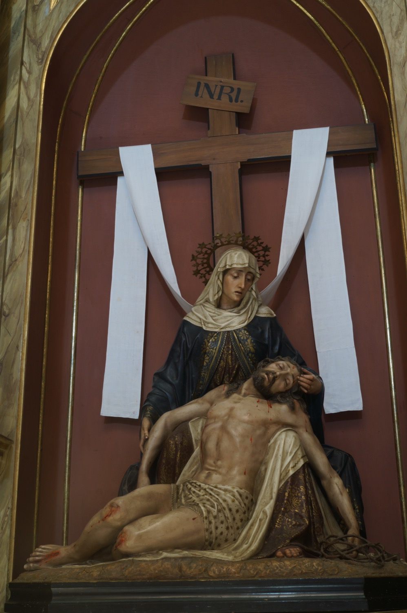

Esta escena de la Piedad nos muestra a Jesús muerto, recién bajado de la cruz, sobre el regazo de su madre, la Virgen María. Detrás de ellos se alza la cruz de la crucifixión, de la que cuelga una sábana blanca formando una M, símbolo de María. En el suelo se encuentra la corona de espinas, que recuerda los tormentos sufridos por Jesús durante la Pasión.